Follow one fact.
Start with its source. Review the current value, then inspect the evidence behind each destination.
Ragged right edge · 52–68ch · no justificationWarm materials. Clear records. Evidence you can inspect.
A distinctive identity for Factmend, with the precision of a ledger and the calm of an editorial archive.
The new website hero comes later. This page is the brand specimen, with reusable assets and interaction examples.
Mended Folio
Olive records. An amber revision.
Amber calls attention. Olive supplies structure. Paper leaves room to understand.
Scope, source, version, policy and evidence. Two font families, with tabular numerals for every record.
C-012 · 08 Oct 2026 · Version 2
Inspect calculated colour contrastsGrids, margins, spacing, text styles and depth—shown at their actual values, with responsive rules you can inspect.
One alignment system across navigation, sections, product screens and footer.
Copy and visual share the same grid.
The diagram fits this panel. The numbers above describe the real layout; the pale columns are an inspection overlay, not a production background.
A 4px base scale. Every bar below is drawn at its labelled CSS pixel width.
space-14pxspace-28pxspace-312pxspace-416pxspace-524pxspace-632pxspace-748pxspace-864pxspace-996pxspace-10128pxReview the source before accepting a new version of a remembered fact.
32px ↓Display through captions, with font, weight, size, line height, letter spacing and word spacing.
Left alignment carries the product story. Center alignment introduces a short chapter. Numeric columns align right.
Start with its source. Review the current value, then inspect the evidence behind each destination.
Ragged right edge · 52–68ch · no justificationOne focused thought,
with room around it.
| Fixture | Versions |
|---|---|
| C-012 | 2 |
| C-017 | 12 |
| C-019 | 103 |
A clear record explains where a fact came from and how it changed. Comfortable line spacing lets the reader follow the evidence without losing their place.
Paragraphs have 16px of separation. The next thought starts on a predictable rhythm.
Inter 18px · 1.6 line height · 0 tracking · normal word spacing · 60ch maximum.
Five depth levels with distinct jobs. Hover or focus a card to compare the next elevation.
none0 8px 24px #1F26170A0 16px 40px #1F2617140 24px 64px #1F26171F0 32px 80px #1F26172EDecorative dividers and interactive boundaries serve different roles. Focus must remain visible.
Pills are reserved for small status labels. Cards and buttons keep their defined corner radius.
Read the detailed foundation specification · CSS tokens · JSON tokens
Every section should make its function apparent. Scope maps, history ledgers, timelines, receipts and manifests each tell a different story.
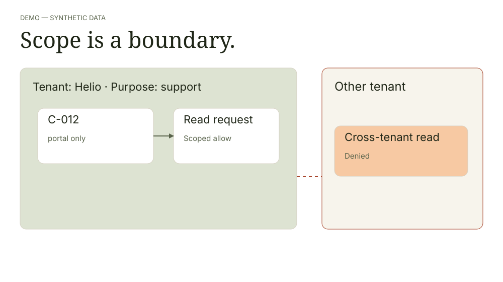
Open full-size diagramScope by tenant and purpose.
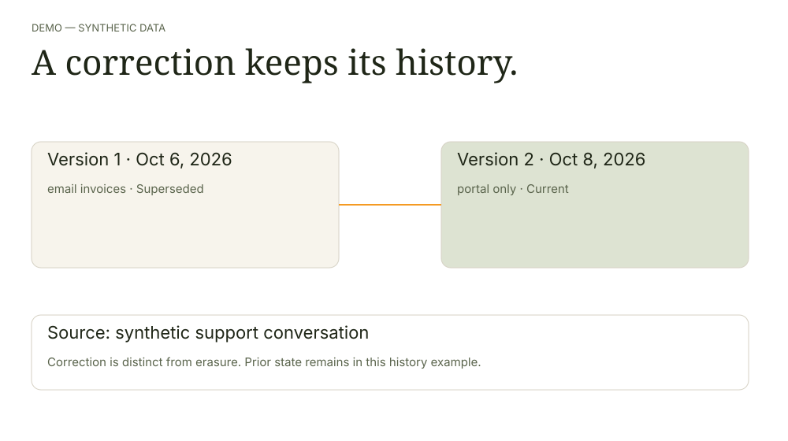
Open full-size diagramInspect sources and changes.
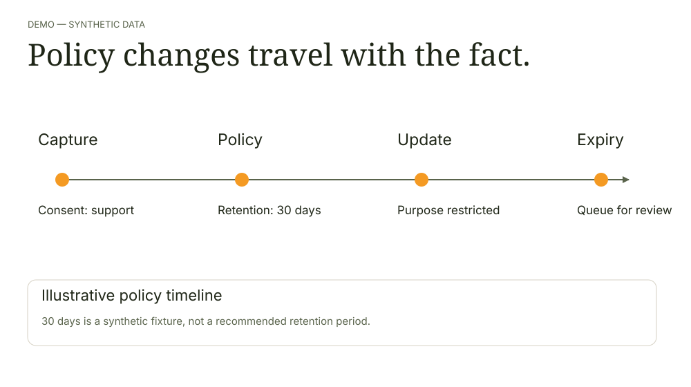
Open full-size diagramTrace consent and retention.
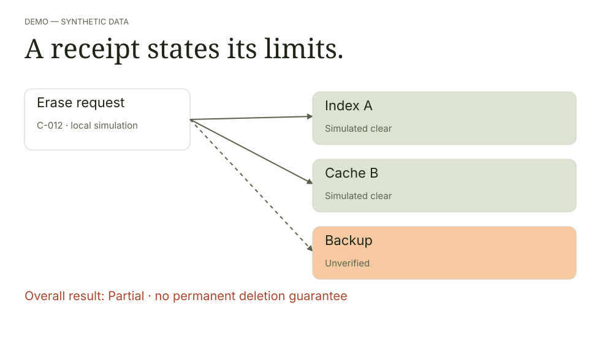
Open full-size diagramRead receipts and their limits.
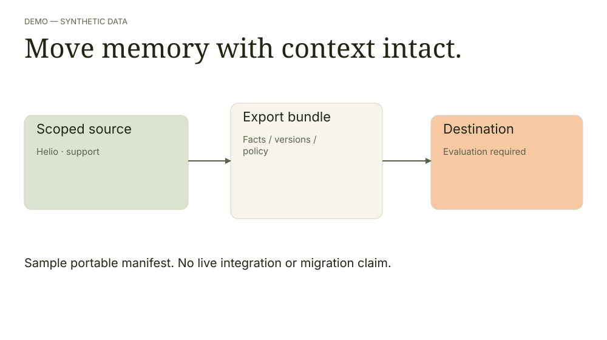
Open full-size diagramMove facts with context intact.
Try the explicit flip toggle and hover the image card. Keyboard and touch keep the same information available.
Two simulated destinations are clear.
The backup remains unverified.
Subtle image zoom and an appearing border. A supporting texture, not the future hero.
White surfaces for data. Semantic state labels. A local fixture you can filter and reset.
8 synthetic records
| ID | Tenant / purpose | Record | State |
|---|
C-012 was corrected from “email invoices” (6 Oct 2026) to “portal only” (8 Oct 2026). Correction and erasure are separate flows.
No theatrical success screen. The result remains partial when the backup boundary cannot be verified.
This simulation operates only on the local synthetic fixture.
C-012 · Helio Helpdesk · support purpose
Ready to simulate. No request has run.
Choose a destination to inspect its state. The unknown backup has no filled bar. These are fixture categories, not performance statistics.
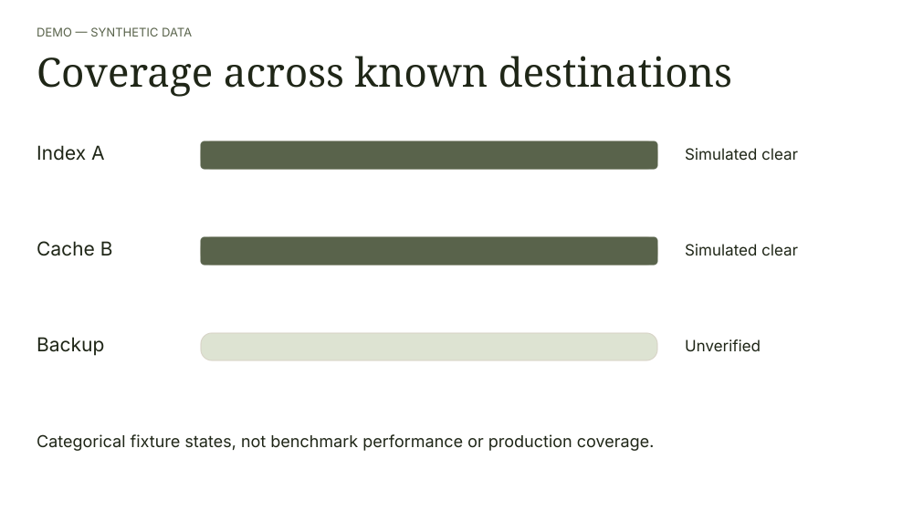
Open full-size diagramSelect a destination for its evidence boundary.
All values are synthetic. Text labels provide the chart's data equivalent.
Editable SVG assets for architecture, source provenance, dashboards, comparison, assessment and authentication sections.
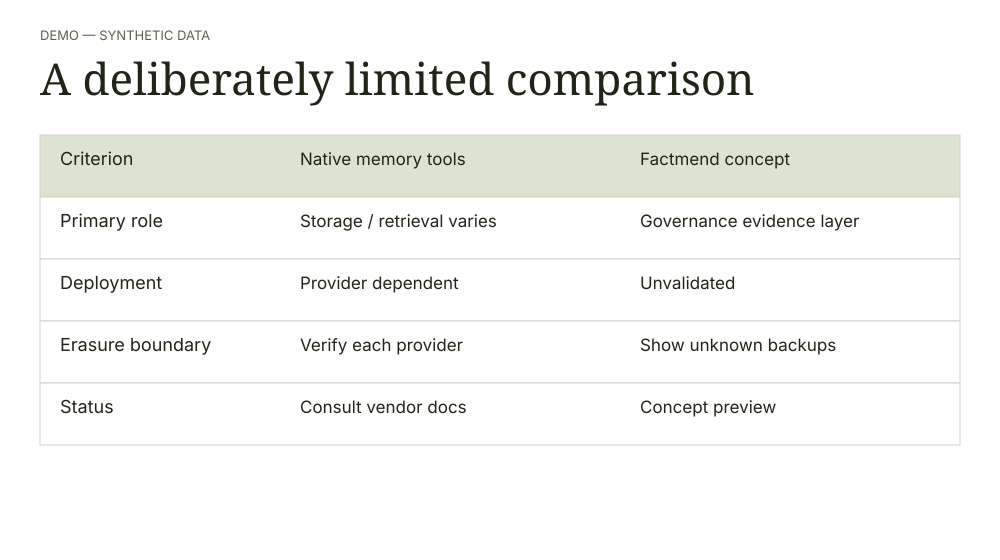
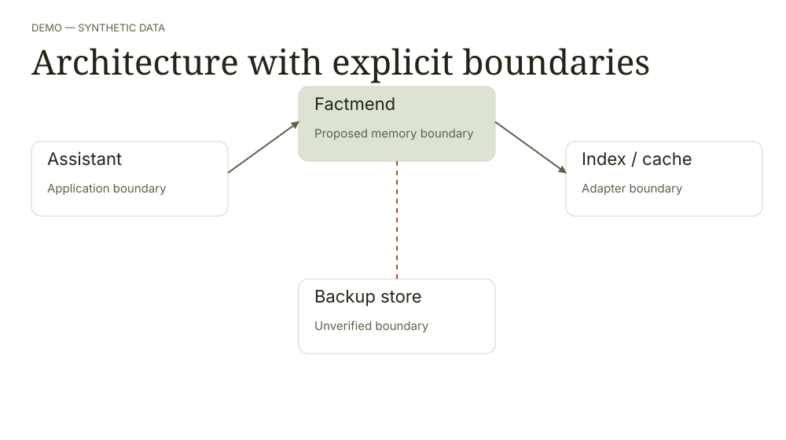
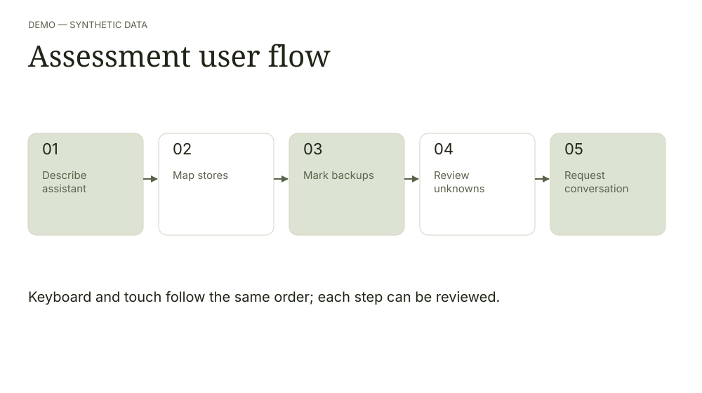
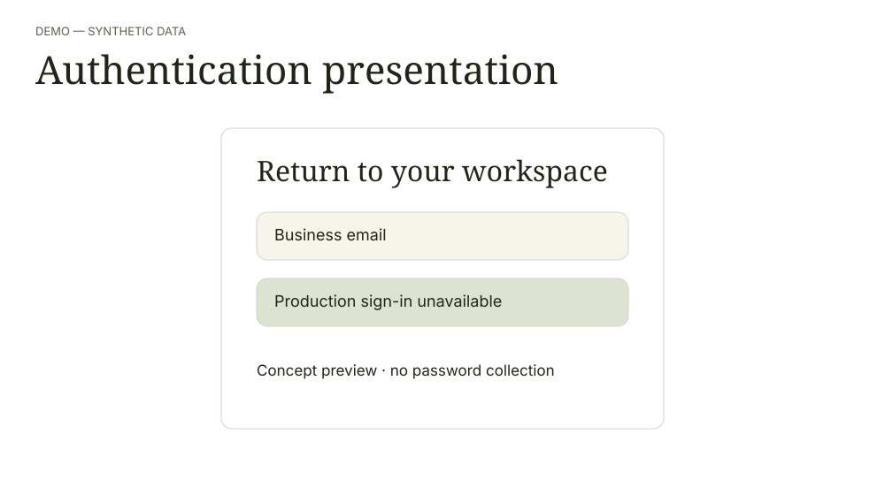
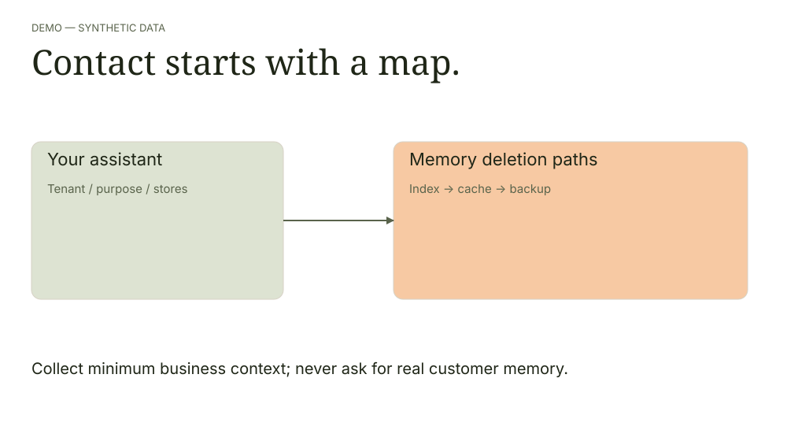
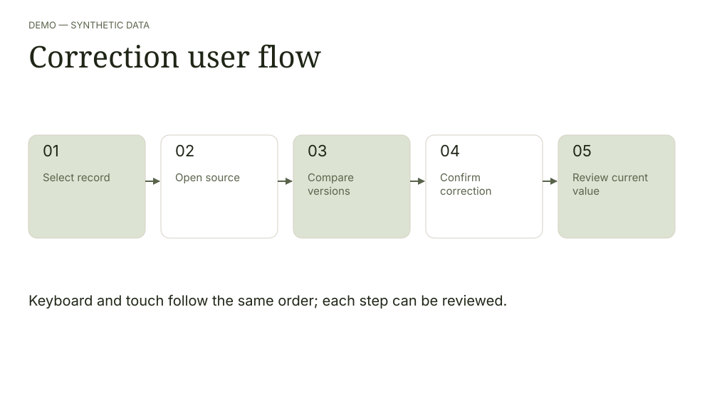
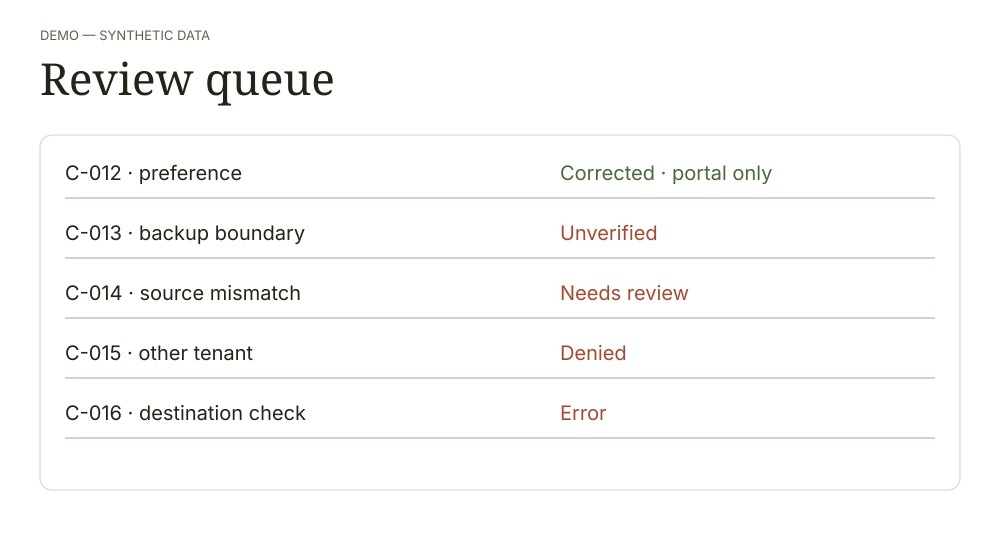
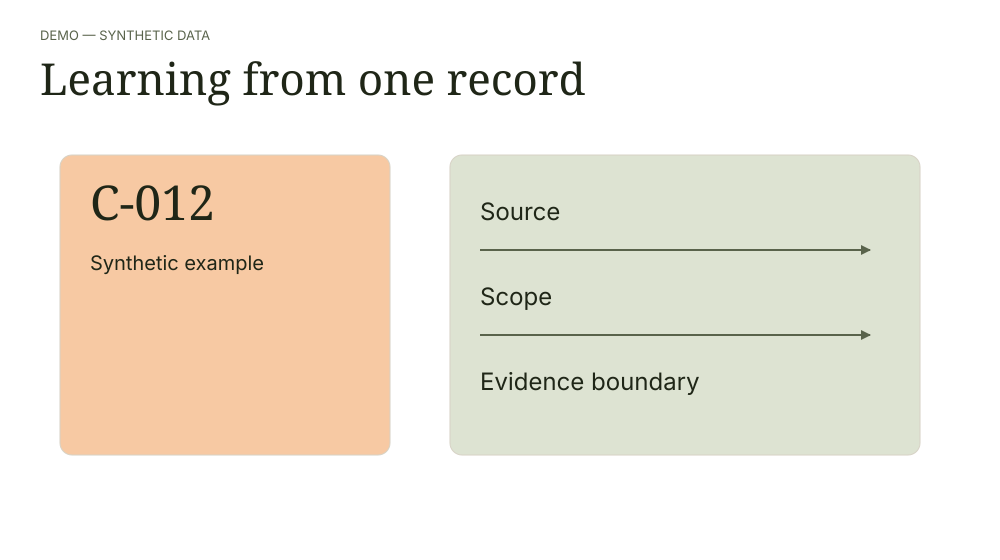
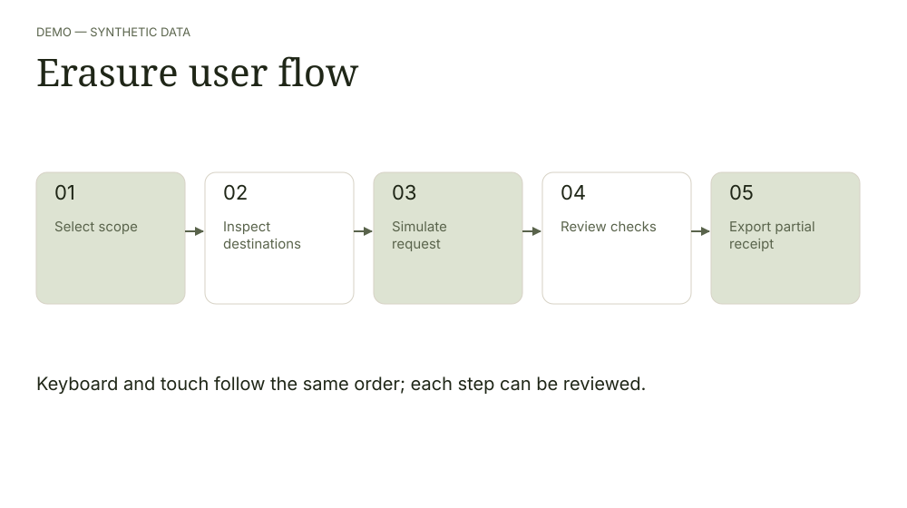
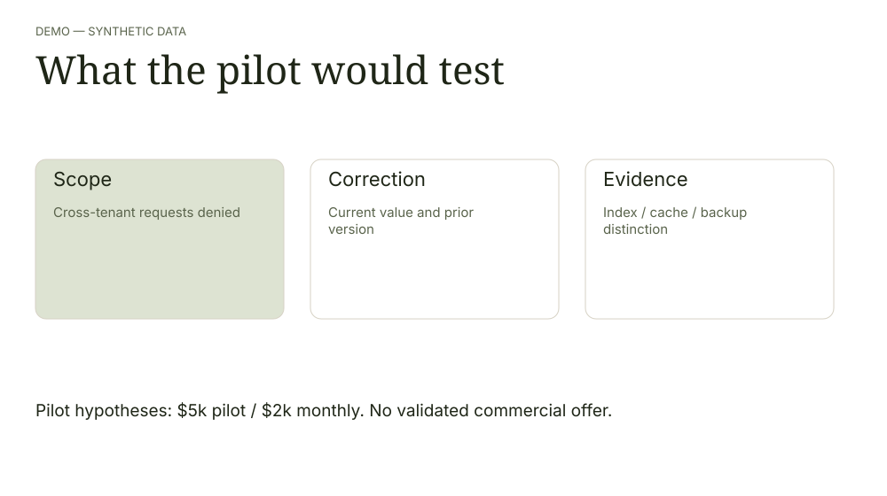
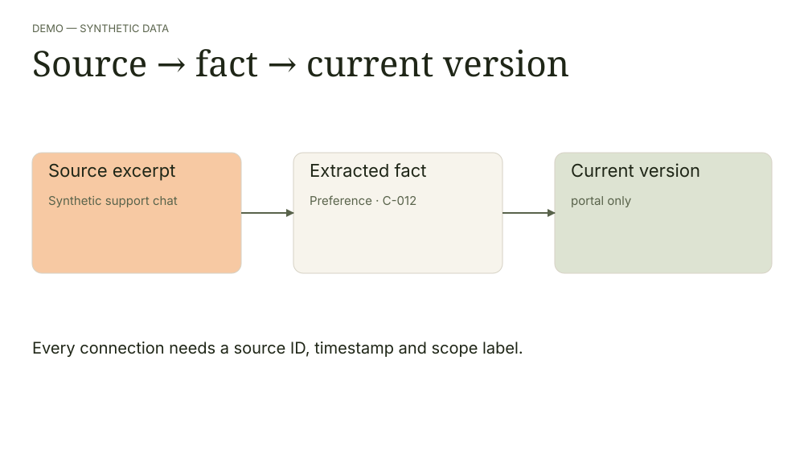
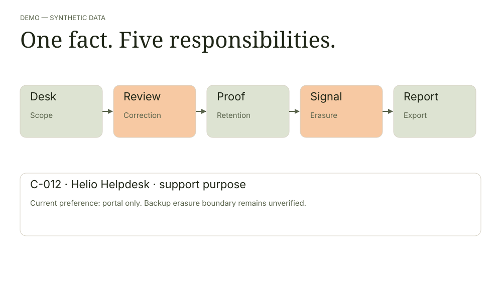
39 original UI glyphs. Rounded 1.75px strokes, a 24px grid and clear accompanying labels.
Three generated supporting photographs, plus five editable grid, dot, folio, contour and linen patterns.
The future hero should communicate one fact across all five responsibilities. The isolated archive object is not the final direction.
Read the page-by-page visual map →